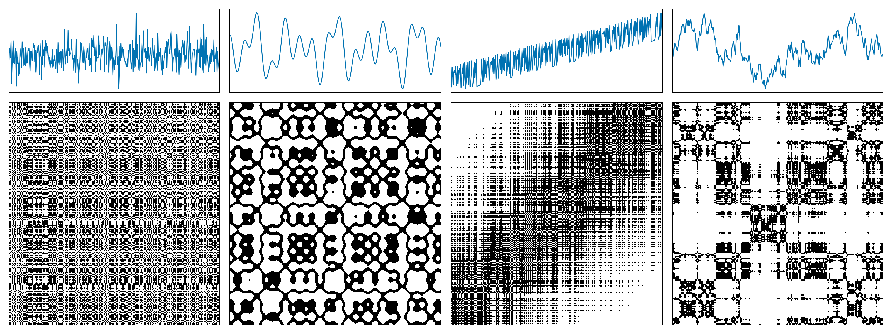
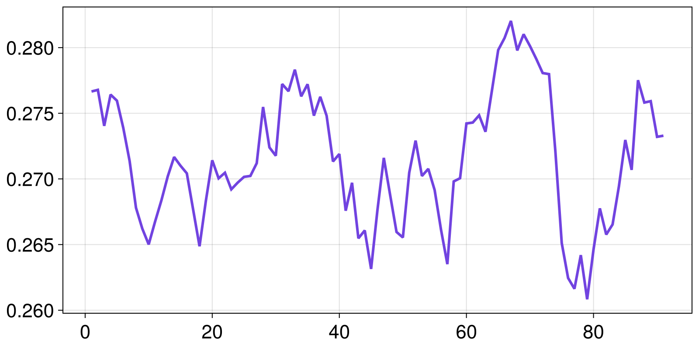

Tutorial for RecurrenceMicrostatesAnalysis.jl
In this tutorial we go through a typical usage of RecurrenceMicrostatesAnalysis.jl. We'll see how to calculate distributions of recurrence microstates, how to optimize our choices regarding the distribution generation, and how to perform Recurrence Microstate Analysis (RMA).
RecurrenceMicrostatesAnalysis.jl interfaces with, and extends, ComplexityMeasures.jl. It can enhance your understanding if you have first view the tutorial of ComplexityMeasures.jl. Regardless the current tutorial is written to be self-contained.
Crash-course into RMA
Consider a time series $\vec{x}_i \in \mathbb{R}^d$, $i \in \{1, 2, \dots, K\}$, where $K$ is the length of the time series and $d$ is the dimension of the phase space. The recurrence matrix
\[R_{i,j} = \Theta(\varepsilon - \|\vec x_i - \vec x_j\|),\]
where $\Theta(\cdot)$ denotes the Heaviside step function and $\varepsilon$ is the recurrence threshold.
The following figure shows examples of recurrence matrices for different systems: (a) white noise; (b) a superposition of harmonic oscillators; (c) a logistic map with a linear trend; (d) Brownian motion.

A recurrence microstate is a local structure extracted from a recurrence matrix. For a given microstate shape and size, the set of possible microstates is finite. For example, square microstates with size $N = 2$ yield $16$ distinct configurations.

In this tutorial, we will not focus on recurrence plots themselves. If you are interested in learning more about them, see the RecurrenceAnalysis.jl documentation or visit recurrence-plot.tk.
Recurrence Microstates Analysis (RMA) uses the probability distribution of these microstates as a source of information for characterizing dynamical systems.
Probability distributions of recurrence microstates
Extracting propabilities corresponding to recurrence microstates is done via the ComplexityMeasures.jl interface and it is relatively straightforward. We first specify the options of RecurrenceMicrostates, which essentially means e.g., what sort of distance threshold defines a recurrence, and what maximum microstate size to consider. Then we pass this to functions like probabilities, entropy, etc.
Let's first generate some data of a chaotic map using DynamicalSystems.jl:
using DynamicalSystemsBase
function henon_rule(u, p, n)
x, y = u # system state
a, b = p # system parameters
xn = 1.0 - a*x^2 + y
yn = b*x
return SVector(xn, yn)
end
u0 = [0.2, 0.3]
p0 = [1.4, 0.3]
henon = DeterministicIteratedMap(henon_rule, u0, p0)
X, t = trajectory(henon, 10_000)
X2-dimensional StateSpaceSet{Float64} with 10001 points
0.2 0.3
1.244 0.06
-1.10655 0.3732
-0.341035 -0.331965
0.505208 -0.102311
0.540361 0.151562
0.742777 0.162108
0.389703 0.222833
1.01022 0.116911
-0.311842 0.303065
⋮
-0.582534 0.328346
0.853262 -0.17476
-0.194038 0.255978
1.20327 -0.0582113
-1.08521 0.36098
-0.287758 -0.325562
0.558512 -0.0863275
0.476963 0.167554
0.849062 0.143089Notice that X is already a StateSpaceSet. Because RecurrenceMicrostatesAnalysis.jl is part of DynamicalSystems.jl, this data type is the preferred input type. Other types are also possible as we described in the API.
Now, we specify the recurrence microstate configuration
using RecurrenceMicrostatesAnalysis
ε = 0.25
N = 2
rmspace = RecurrenceMicrostates(ε, N)RecurrenceMicrostates, with 3 fields:
shape = RecurrenceMicrostatesAnalysis.Rect2Microstate{2, 2, 2}()
expr = ThresholdRecurrence{Float64, Euclidean}(0.25, Euclidean(0.0))
sampling = SRandom{Float64}(0.05)
and finally call
probs = probabilities(rmspace, X) Probabilities{Float64,1} over 16 outcomes
1 0.603512
2 0.0439738
3 0.096559
4 0.0025394
5 0.0962406
6 0.0024936
7 0.0157998
8 0.0046238
9 0.03934
10 0.0710062
11 0.0072104
12 0.0017692
13 0.0071554
14 0.0017444
15 2.0e-7
16 0.0060322The probabilities function is the same function as in ComplexityMeasures.jl. Given an outcome space, that is a way to symbolize input data into discrete outcomes, probabilities return the probability (relative occurrence frequency) for each outcome. And indeed, the recurrence microstates is an outcome space.
If instead of the probabilities of the microstates you want their direct count simply replace probabilities with counts.
counts(rmspace, X)16-element Vector{Int64}:
3018059
220177
481277
12768
482122
12811
78779
23276
195776
354949
36228
8765
36186
8788
0
30039Recurrence microstates analysis (RMA)
To actually analyze your data, there are two ways forwards. One way, is to utilize these probabilities within the interface provided by ComplexityMeasures.jl to calculate entropies. For example, the corresponding Shannon entropy is
entropy(Shannon(), probs)2.095945642843763(note that the API of ComplexityMeasures is re-exported by RecurrenceMicrostateAnalysis). This number corresponds to the recurrence microstate entropy as defined in our publication (Corso et al., 2018).
ComplexityMeasures allows the convenience syntax of
entropy(Shannon(), rmspace, X)2.097257624341125so in this case we wouldn't need to calculate the probabilities directly. Naturally, any other entropy could be estimated instead,
entropy(Tsallis(), rmspace, X)2.095883646371464although we haven't explored alternative entropies in research yet.
The second way forward is the more traditional recurrence quantification analysis route, where you estimate (approximately, really) various quantities such as laminarity that fundamentally relate to the context of recurrences.
These quantities are estimated using a ComplexityEstimator, similar to ComplexityMeasures.jl. We begin by defining our estimators:
- For recurrence rate:
rr_estimator = RecurrenceRate(ε)RecurrenceRate, with 3 fields:
ε = 0.25
metric = Euclidean(0.0)
sampling = SRandom{Float64}(0.1)
- For laminarity:
lam_estimator = RecurrenceLaminarity(ε)RecurrenceLaminarity, with 3 fields:
ε = 0.25
metric = Euclidean(0.0)
sampling = SRandom{Float64}(0.1)
- For determinism:
det_estimator = RecurrenceDeterminism(ε)RecurrenceDeterminism, with 3 fields:
ε = 0.25
metric = Euclidean(0.0)
sampling = SRandom{Float64}(0.1)
Then, we use the complexity function to estimate the quantities:
rr = complexity(rr_estimator, X)
lam = complexity(lam_estimator, X)
det = complexity(det_estimator, X)
rr, lam, det(0.13398898880334045, 0.16910013916909772, 0.825773455539412)We can compare these values with the exact values computed using RecurrenceAnalysis.jl.
using RecurrenceAnalysis
rp = RecurrenceMatrix(X, ε)
qt = rqa(rp)
qt[:RR], qt[:LAM], qt[:DET](0.13413876612338765, 0.16915133841224356, 0.8254655734955636)All of these quantities, like laminarity, are in fact complexity measures, which is why RecurrenceMicrostateAnalysis.jl fits so well within the interface of ComplexityMeasures.jl.
We have also implemented a unified function to compute all RMA estimations, similar to the rqa function from RecurrenceAnalysis.jl. This is the rma function:
rma(ε, X)Dict{Symbol, Float64} with 5 entries:
:RR => 0.134213
:LAM => 0.169129
:DISREM => 0.437412
:RENT => 4.25674
:DET => 0.825711Disorder
Recurrence Microstates Analysis also introduces a novel quantifier: "Disorder index via symmetry in recurrence microstates" (DISREM). This quantifier uses the equiprobability property of recurrence microstates, due to the disorder condition, to quantify the disorder of a sequence of data elements. We also estimate disorder using a complexity estimator:
disorder = Disorder()Disorder, with 2 fields:
metric = Euclidean(0.0)
threshold_range = 40
Then, we can estimate disorder for our time series:
complexity(disorder, X)0.3405311289565543Note that disorder is free of parameters (except for the microstate length and the number of thresholds used). This is because the quantifier is defined using the maximum total entropy of recurrence microstate classes, considering a large range of thresholds.
It is also possible to estimate disorder while splitting the data into windows. We prepared a special complexity estimator for this, aiming to facilitate its usage. In this situation, you must define a WindowedDisorder.
window_len = 1000
win_disorder = WindowedDisorder(window_len; step = 100)WindowedDisorder, with 3 fields:
metric = Euclidean(0.0)
threshold_range = 40
win_step = 100
Here, we are using windows of length 1000 points, moved in steps of 100 points. Finally, we compute the quantifier for each window:
wd = complexity(win_disorder, X)91-element Vector{Float64}:
0.27665937748286634
0.2767845302956885
0.27404056167293583
0.27642370402579214
0.27596012576704404
0.27388529926790206
0.2713581665241809
0.26780150805795216
0.26620635147787913
0.26501014586215793
⋮
0.26653190445226826
0.2694433733258536
0.27296826800176405
0.27068743308405463
0.2775210559808478
0.27581691438573946
0.27592259674399217
0.2732073514581118
0.2732929563779993Plotting it:
using CairoMakie
lines(wd)
Disorder is only available for the standard outcome space extracted from an RP using square microstates. Therefore, it is not compatible with different microstate shapes or input variations such as CRP and SRP, which will be introduced later.
Disorder uses several recurrence microstate distributions computed using a full sampling mode. It is a heavy quantifier that can have a high computational cost. For large time series, we recommend computing this quantifier using GPU.
Optimization of free parameters
It is known that recurrence analysis has some free parameters. The most important of them is the recurrence threshold, $\varepsilon$, used to define which elements from a sequence are recurrent and which are not. In practice, these free parameters are not a major issue and allow different analyses of the same system. Of course, RecurrenceMicrostateAnalysis.jl considers this and allows you to use any value as your threshold.
Nevertheless, RMA has two situations where it is necessary to set a specific recurrence threshold: when computing disorder and when using RMA distributions as input for machine learning.
In both of these situations, it is important to use a threshold that maximizes a certain quantity. Disorder is defined as the maximum total entropy per class; therefore, the recurrence threshold is not truly a free parameter in this case, since there is an optimal threshold that results in the maximum observable disorder. Moreover, when working with RMA and machine learning (see this example), in most cases there is a correlation between the accuracy and the distribution that maximizes the recurrence entropy (Spezzatto et al., 2024). Thus, it is a good idea to use this as a basis for defining an optimal value for the recurrence threshold.
With this in mind, we provide a function to optimize some Parameter based on a given quantity. Currently, the only available parameter is Threshold, which can be optimized using the function optimize by maximizing recurrence entropy or disorder.
Using recurrence entropy as an example:
ε, S = optimize(Threshold(), Shannon(), N, X)
rmspace = RecurrenceMicrostates(ε, N)
h = entropy(Shannon(), rmspace, X)
(h, S)(3.7631614851779176, 3.7627422936284787)Or for disorder:
ε, ξ = optimize(Threshold(), disorder, X)
Ξ = complexity(disorder, X)
(Ξ, ξ)(0.3405311289565543, 0.3393748926804012)Note that there is a difference between Ξ and ξ. The optimize function uses a sampling ratio of $10\%$, which can result in a considerably different value. Internally, this optimization structure is used to define an optimal threshold range, from which we extract the disorder using the sampling mode Full. If you want to compute the "disorder" for a specific threshold, it is possible using the internal struct PartialDisorder:
partial = RecurrenceMicrostatesAnalysis.PartialDisorder(ThresholdRecurrence(ε), N)
complexity(partial, X)0.9641709805778156Custom specification of recurrence microstates
When we write rmspace = RecurrenceMicrostates(ε, N), we are in fact accepting a default definition for both what counts as a recurrence and which recurrence microstates to examine. We can alter either by choosing the recurrence expression, the specific microstate(s) we wish to analyze, or the sampling method used to extract these microstates from the input data. For example:
expr = CorridorRecurrence(0.05, 0.27)
shape = TriangleMicrostate(3)
sampling = Full()
rmspace = RecurrenceMicrostates(expr, shape; sampling)
probabilities(rmspace, X) Probabilities{Float64,1} over 64 outcomes
1 0.5335222591166008
2 0.03417961558132011
3 0.04966009152170343
4 0.0029601620027989396
5 0.022337327242075142
6 0.02360971170624413
7 0.0011420283942585679
8 0.0012817563384501266
9 0.06964215773512544
10 0.009318793665545172
⋮
56 0.0002970794129117882
57 0.0037026204870712095
58 6.801360204027203e-6
59 0.00047494498424739966
60 0.00010736147122062942
61 0.00010539107716152154
62 8.903780667095613e-5
63 0.0012017803440510068
64 0.0008097719462915389RecurrenceMicrostateAnalysis.jl supports several configurations for the recurrence outcome space while leveraging the same backend (see RecurrenceMicrostates). If you want to contribute with new recurrence expressions, microstate shapes, or sampling modes, read the section for devs and open an issue if you encounter any difficulties 🙂
Cross recurrence plots
For cross-recurrences, nearly nothing changes for you, nor for the source code of the code base! Simply call function(..., rmspace, X, Y), adding an additional final argument Y corresponding to the second trajectory from which cross recurrences are estimated.
For example, here are the cross recurrence microstate distribution for the original Henon map trajectory and one at slightly different parameters
set_parameter!(henon, 1, 1.35)
Y, t = trajectory(henon, 10_000)
probabilities(rmspace, X, Y) Probabilities{Float64,1} over 64 outcomes
1 0.522729280628833
2 0.03302260419061208
3 0.049826934888708395
4 0.0030486296954527936
5 0.0223273152397748
6 0.023610851934278337
7 0.0010559911876776237
8 0.0014875674986240498
9 0.0703320957158222
10 0.010603160526073609
⋮
56 0.000384286853527837
57 0.004029645888881318
58 7.161432214828644e-6
59 0.00046162231984774634
60 0.00014239847827166954
61 0.00012427485372799705
62 0.00011136227134064541
63 0.0014062912441859248
64 0.0009873774656193493This augmentation from one to two input data works for most functions discussed in this tutorial. Coincidentally, the same extension of probabilities to multivariate data is done in Associations.jl.
Spatial data
Finally, let's discuss spatial data. This is an exploratory method implemented in the package based on Spatial Recurrence Plots (Marwan et al., 2007). It means that the microstates can be a tensor structure, e.g., a hypercube. However, it is also important to note that the number of bits (or recurrences) inside the microstate increases, resulting in an exponential increase in the probability distribution length, which can result in a lack of memory.
To exemplify its use, we will define here 2D square microstates $3\times 3$, but that is a projection of the tensorial hypercubic microstate with side length $3$ into the first and third dimensions; that is:
shape = (3, 1, 3, 1)
srmspace = RecurrenceMicrostates(ε, shape)RecurrenceMicrostates, with 3 fields:
shape = RecurrenceMicrostatesAnalysis.RectNMicrostate{4, 2, 9}((3, 1, 3, 1))
expr = ThresholdRecurrence{Float64, Euclidean}(0.7375011754776633, Euclidean(0.0))
sampling = SRandom{Float64}(0.05)
As an example, let's use an RGB image:
import Images
img = Images.load("assets/example.jpg")We need to reorganize it as an Array{3, Float64}. The first dimension must be our RGB values, while the other two need to be the horizontal and vertical positions of the pixels.
W, H = size(img)
arr = Array{Float64}(undef, 3, H, W)
for i in 1:H, j in 1:W
c = img[i, j]
arr[1, i, j] = float(c.r)
arr[2, i, j] = float(c.g)
arr[3, i, j] = float(c.b)
end
size(arr) == (3, H, W)trueFinally, we can use the probabilities function to estimate our recurrence microstate distribution.
probs = probabilities(srmspace, arr) Probabilities{Float64,1} over 512 outcomes
1 0.32545147434159005
2 5.541465045441959e-5
3 7.2547853371809026e-6
4 2.2159374798695185e-5
5 5.403798050217925e-5
6 6.514862086619177e-6
7 2.1475461674670004e-5
8 0.004361965478117238
9 7.104442365951229e-6
10 2.2324457276908157e-5
⋮
504 1.6322530033307867e-5
505 0.004435456659935979
506 5.529968229994984e-5
507 6.980630507291498e-6
508 7.661300939780353e-5
509 5.5043214878440394e-5
510 1.622819718861474e-5
511 7.456127002572798e-5
512 0.6368339271330422Although Marwan adapted some RQA quantities for spatial recurrence plots, they cannot be estimated using RMA. The only exception here is the recurrence rate, which can be estimated as:
RecurrenceMicrostatesAnalysis.measure(rr_estimator, probs)0.6559138114574438Another quantity that can be computed is the recurrence microstate entropy:
entropy(Shannon(), probs)1.2546494276985574RMA with spatial data is a very interesting and complex topic, and we have implemented it to motivate possible research using this feature. So feel free to try it and notify us if you have some success 😁
Note that if you are using a grayscale image, you need to use an Array with size (1, H, W). The first dimension stores the features of the data, which are used to compute the recurrences, i.e., $\vec{x}_{\vec{i}}$. The same principle must be applied to other types of spatial data.
GPU
Computation of recurrence microstate distributions via RecurrenceMicrostatesAnalysis.jl is compatible with different GPU devices due to an abstract kernel written using KernelAbstractions.jl.
The use of the GPU backend is very similar to the CPU backend; however, the input type must be an AbstractGPUVector{<:SVector}, instead of a StateSpaceSet or a Vector{<:Real}.
The current GPU backend is not compatible with spatial data. It only works with time series.
Computing recurrence microstate distributions
The first step to compute a recurrence microstate distribution using a GPU is to import the package associated with your device, such as CUDA.jl or Metal.jl. Next, you need to move your StateSpaceSet to the GPU. For example:
using CUDA
X_float32 = [Float32.(x) for x ∈ X]
X_gpu = CuVector(X_float32)This GPU vector X_gpu can be used as input for the probabilities function:
ε = 0.27f0
N = 3
rmspace = RecurrenceMicrostates(ε, N; metric = GPUEuclidean())
probs = probabilities(rmspace, X_gpu)Probabilities{Float64,1} over 512 outcomes
1 0.1298675475359977
2 0.017550106511280954
3 0.028929580130109996
4 0.0016157228214197196
5 0.039249842118455266
6 0.014588514785254093
⋮
507 0.0001702340127557486
508 0.0006545307752488948
509 0.00010442086328848504
510 0.00043848760982444294
511 0.0
512 0.0031636320936923195Note that the recurrence microstate outcome space has two specifications:
The
thresholdmust have the same type as the input. If you have anAbstractGPUVector{<:SVector{D, T}}as input, whereTis the data type (e.g.,Float32orFloat64), yourthresholdmust also be of typeT.The
metricmust be aGPUMetric. This is required because Distances.jl is not fully compatible with GPUs.
When using a random sampling mode (e.g., SRandom), the samples are extracted on the CPU, and only the microstates are computed on the GPU. Therefore, the sampling ratio can be Float64, even if the GPU is not compatible with this data type.
Estimating RQA and disorder
Just as the distribution computation keeps the same structure when using a GPU instead of a CPU, the estimation of RQA or the computation of disorder or recurrence entropy is similar.
- Entropy
entropy(Shannon(), rmspace, X_gpu)- Recurrence rate
complexity(RecurrenceRate(ε; metric = GPUEuclidean()), X_gpu)- Determinism
complexity(RecurrenceDeterminism(ε; metric = GPUEuclidean()), X_gpu)- Laminarity
complexity(RecurrenceLaminarity(ε; metric = GPUEuclidean()), X_gpu)- Disorder
complexity(Disorder(N; metric = GPUEuclidean()), X_gpu)- Windowed disorder
W = 100
complexity(WindowedDisorder(W, N; metric = GPUEuclidean()), X_gpu)Note that if you are using WindowedDisorder for a long time series, but splitting it into small windows (e.g, W = 1000), the GPU can be less effienct than the CPU. It happens because only the probability computation is performed in the GPU.
Performance
Working with RMA on a GPU is faster than using a CPU. However, it is important to note that GPUs require initialization time; therefore, they perform better for long time series 🙂
Let's test it using BenchmarkTools.jl!
using BenchmarkToolsFirst, we can compute some probability distributions on the CPU. To make it expensive, we use microstates $5\times 5$ and take all microstates available in the RP. Then, for a time series of length 1,000 points, we have ~1,000,000 microstates, and since these microstates have 25 recurrences, we need to compute approximately 25 million recurrences. For a time series with 5,000 points we have ~5 times this value 😉
X_test = X[1:1000]
rmspace = RecurrenceMicrostates(0.27, 5; sampling = Full())
@benchmark probabilities(rmspace, X_test)BenchmarkTools.Trial: 4 samples with 1 evaluation per sample.
Range (min … max): 1.565 s … 1.717 s ┊ GC (min … max): 30.86% … 26.69%
Time (median): 1.600 s ┊ GC (median): 26.32%
Time (mean ± σ): 1.620 s ± 70.701 ms ┊ GC (mean ± σ): 25.31% ± 4.59%
█ █ █ █
█▁█▁▁▁▁▁▁▁▁▁▁▁▁▁▁▁▁▁▁▁▁█▁▁▁▁▁▁▁▁▁▁▁▁▁▁▁▁▁▁▁▁▁▁▁▁▁▁▁▁▁▁▁▁█ ▁
1.56 s Histogram: frequency by time 1.72 s <
Memory estimate: 4.00 GiB, allocs estimate: 109.X_test = X[1:5000]
@benchmark probabilities(rmspace, X_test)BenchmarkTools.Trial: 3 samples with 1 evaluation per sample.
Range (min … max): 1.855 s … 1.955 s ┊ GC (min … max): 23.40% … 28.08%
Time (median): 1.931 s ┊ GC (median): 28.42%
Time (mean ± σ): 1.913 s ± 52.274 ms ┊ GC (mean ± σ): 26.94% ± 3.07%
█ █ █
█▁▁▁▁▁▁▁▁▁▁▁▁▁▁▁▁▁▁▁▁▁▁▁▁▁▁▁▁▁▁▁▁▁▁▁▁▁▁▁▁▁▁█▁▁▁▁▁▁▁▁▁▁▁▁█ ▁
1.85 s Histogram: frequency by time 1.95 s <
Memory estimate: 4.00 GiB, allocs estimate: 109.Now, let's perform the same example on the GPU:
using Metal
X_gpu = MtlVector(X_float32[1:1000])
rmspace = RecurrenceMicrostates(0.27f0, 5; sampling = Full(), metric = GPUEuclidean())
@benchmark probabilities(rmspace, X_gpu)BenchmarkTools.Trial: 26 samples with 1 evaluation per sample.
Range (min … max): 87.969 ms … 316.239 ms ┊ GC (min … max): 15.21% … 58.26%
Time (median): 194.991 ms ┊ GC (median): 19.28%
Time (mean ± σ): 194.819 ms ± 49.483 ms ┊ GC (mean ± σ): 31.77% ± 23.86%
▁ ▁ ▁▁▁▁ █▁ ▁ █▁ █▁▁ ▁█ █ ▁ ▁ ▁ ▁
█▁▁▁▁▁▁▁▁▁▁▁█▁████▁██▁█▁▁▁██▁███▁██▁▁▁█▁▁▁▁█▁▁█▁▁▁▁█▁▁▁▁▁▁▁▁█ ▁
88 ms Histogram: frequency by time 316 ms <
Memory estimate: 640.02 MiB, allocs estimate: 474.X_gpu = MtlVector(X_float32[1:5000])
@benchmark probabilities(rmspace, X_gpu)BenchmarkTools.Trial: 16 samples with 1 evaluation per sample.
Range (min … max): 259.752 ms … 386.680 ms ┊ GC (min … max): 2.63% … 25.25%
Time (median): 324.494 ms ┊ GC (median): 22.84%
Time (mean ± σ): 325.391 ms ± 35.346 ms ┊ GC (mean ± σ): 21.35% ± 14.70%
█ █ █ ███ █ ███ █ █ █ █ █ █
█▁▁▁▁▁▁▁▁▁█▁▁█▁▁▁▁▁▁▁▁███▁▁█▁▁███▁█▁█▁▁▁█▁▁▁▁▁▁▁▁▁▁▁▁▁▁▁█▁█▁█ ▁
260 ms Histogram: frequency by time 387 ms <
Memory estimate: 640.02 MiB, allocs estimate: 476.The results show a considerable difference in computational time between the two cases. The CPU requires approximately 5–10 times more time to compute the same task as the GPU 🙂
Let's also run a test using the disorder computation:
X_test = X[1:1000]
@benchmark complexity(Disorder(4), X_test)BenchmarkTools.Trial: 19 samples with 1 evaluation per sample.
Range (min … max): 238.750 ms … 318.955 ms ┊ GC (min … max): 2.86% … 28.01%
Time (median): 259.462 ms ┊ GC (median): 6.82%
Time (mean ± σ): 274.213 ms ± 34.593 ms ┊ GC (mean ± σ): 16.25% ± 11.64%
█
█▅█▅▁▁▁▁▁▁▁▁▁▁▁▅▁▁▁▁▁▁▁▁▁▁▁▁▁▁▁▁▁▁▁▁▁▁▁▁▁▁▁▁▁▁▁▁▁▅▁▅███▁▁▁▁▁▅ ▁
239 ms Histogram: frequency by time 319 ms <
Memory estimate: 541.90 MiB, allocs estimate: 600351.X_gpu = MtlVector(X_float32[1:1000])
@benchmark complexity(Disorder(4; metric = GPUEuclidean()), X_gpu)BenchmarkTools.Trial: 16 samples with 1 evaluation per sample.
Range (min … max): 240.301 ms … 459.589 ms ┊ GC (min … max): 1.18% … 1.99%
Time (median): 319.407 ms ┊ GC (median): 1.60%
Time (mean ± σ): 322.378 ms ± 73.731 ms ┊ GC (mean ± σ): 8.72% ± 10.56%
█▁ ▁▁▁▁ ▁▁▁ ▁ ▁ ▁ ▁ ▁ ▁
██▁▁████▁▁▁▁▁▁▁▁▁▁▁▁▁███▁▁▁▁▁█▁▁▁▁▁▁▁▁▁█▁█▁▁▁█▁▁▁▁▁▁▁▁█▁▁▁▁▁█ ▁
240 ms Histogram: frequency by time 460 ms <
Memory estimate: 268.43 MiB, allocs estimate: 614742.Note that in this situation, the CPU is slightly faster than the GPU due to several internal initializations that are not offset by the computation time.
Now, let's try the same test using a larger time series:
X_test = X[1:9000]
@benchmark complexity(Disorder(4), X_test)BenchmarkTools.Trial: 1 sample with 1 evaluation per sample.
Single result which took 15.382 s (0.69% GC) to evaluate,
with a memory estimate of 534.26 MiB, over 600348 allocations.X_gpu = MtlVector(X_float32[1:9000])
@benchmark complexity(Disorder(4; metric = GPUEuclidean()), X_gpu)BenchmarkTools.Trial: 1 sample with 1 evaluation per sample.
Single result which took 9.918 s (0.22% GC) to evaluate,
with a memory estimate of 264.68 MiB, over 614802 allocations.And now, computation is faster on the GPU than on the CPU. Therefore, it is important to note that the GPU is not a magic solution: for long time series when computing recurrence microstate probabilities, the GPU will be faster; however, for smaller cases, it may be better to use the CPU.